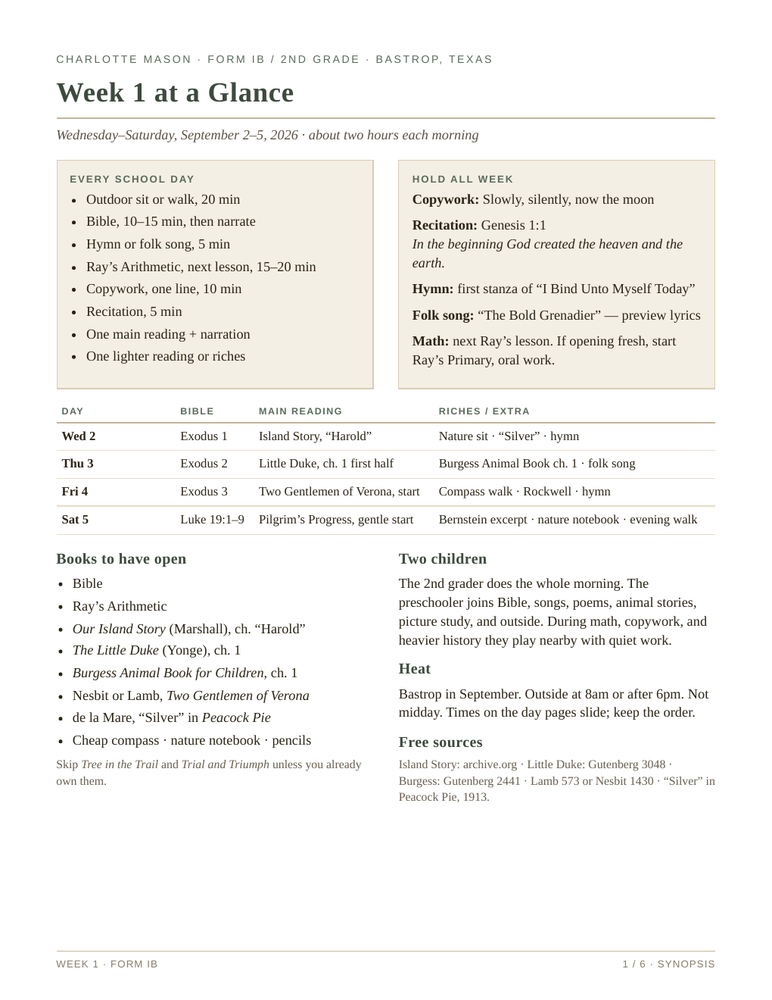

Form IB, 2nd grade, plus preschool. Wednesday through Saturday. About two hours in the morning.
AO Year 2, Term 1, week 1. Six-page plan: at a glance, teaching guide, then one page per day.
| Day | Bible | Main reading |
|---|---|---|
| Wed | Exodus 1 | Island Story, “Harold” |
| Thu | Exodus 2 | Little Duke, ch. 1 first half |
| Fri | Exodus 3 | Start Two Gentlemen of Verona |
| Sat | Luke 19:1–9 | Pilgrim’s Progress, gentle start |
Copywork: Slowly, silently, now the moon
Recitation: Genesis 1:1
Hymn: I Bind Unto Myself Today (first stanza)
Nature: one thing on the porch; Saturday after 6, one invertebrate at Lost Pines or a creek

AO Year 2, Term 1, week 2. Eleven pages plus a teacher page from When Children Love to Learn, Chapter 2. Ready to teach.
| Day | Bible | Main reading |
|---|---|---|
| Wed | Exodus 4 | Island Story, Stamford Bridge |
| Thu | Exodus 5 | Little Duke, finish ch. 1 |
| Fri | Exodus 6 | Understood Betsy ch. 1 |
| Sat | Luke 19:10–27 | CHOW, two emperors |
Copywork: I know a little cupboard
Recitation: Genesis 1:1
Also: Burgess ch. 2, Pilgrim’s Progress continues, Rockwell second look
Full log: LESSON-LOG.md